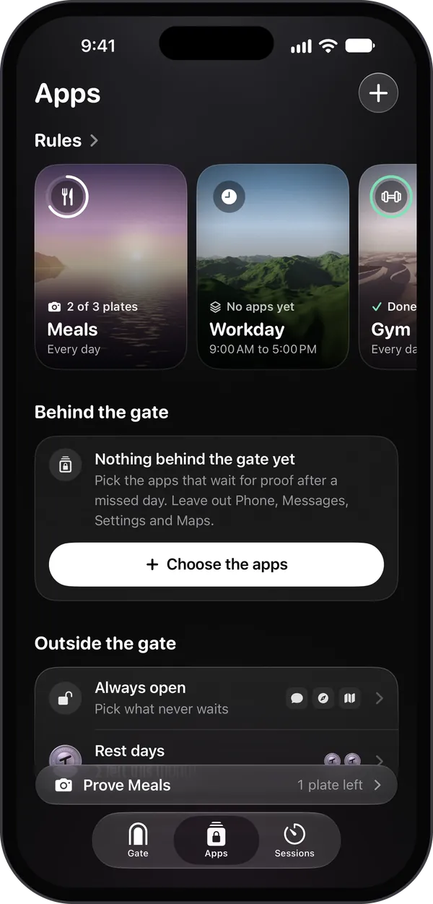

Schedules and limits
Toll ProShut the gate on a schedule, or once the apps have had their minutes for the day. Neither asks for a photo; both open by themselves.
9 to 5A workday, the days you pick
10 PMThe night, until the morning
45mA day in the apps, then shut until midnight
